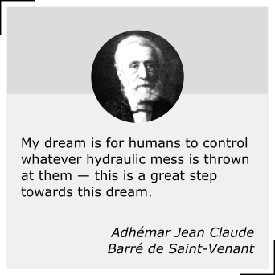
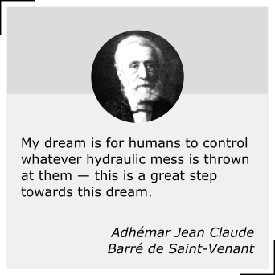

pystorms
A simulation sandbox for the development and evaluation of stormwater control algorithms
Welcome! We’ve developed pystorms with the objective of making the research of stormwater control more accessible. This open-source python package provides a curated collection of diverse stormwater networks and rain events, coupled with a streamlined programming interface and a stormwater simulator to provide a standalone package for the development and evaluation of stormwater control algorithms. Please refer to the manuscript for more details on the motivation behind this effort.
Getting Started
pystorms is available on pypi and can be directly installed using pip. It is supported on OSX, Linux, and Windows. pystorms requires python(3+), pyswmm, numpy(≥ 18.4), and PyYAML(≥ 5.3). Please raise an issue on the repo or reach out if you encounter any installation issues.
pip install pystormsIn pystorms , control of stormwater networks is abstracted as scenarios, named after letters from Greek alphabet.
import pystorms def controller(state): """ Your control algorithm that generates actions based on state information. """ return actions env = pystorms.scenarios.theta() done = False while not done: state = env.state() actions = controller(state) done = env.step(actions)
Scenario theta is a synthetic example for prototyping control algorithms. Six other scenarios inspired from real-world stormwater are included to provide realistic examples for evaluating stormwater control algorithms. Please refer to the documentation for more details.
Get Involved
If you want to be more involved, please consider the following:
- Submit some of your own scenarios to our repository! We are looking to expand this package to include far more networks/scenarios with more diverse control needs and that have been implemented with a variety of different hydraulic simulators.
- Download our code and hack into it for whatever other needs you may have! We have built this package to be 100% open-source, so if you want to use it for any other application or need that you see fit, by all means, have at it. While the scenarios were built specifically for direct algorithm performance, we have also provided libraries of many other driving events so that you can customize your own research problem.
- Check out our other open-source efforts, including open-storm.org, where we have built open-source sensor nodes for smart stormwater testing and deployment.
Testimonials
 
